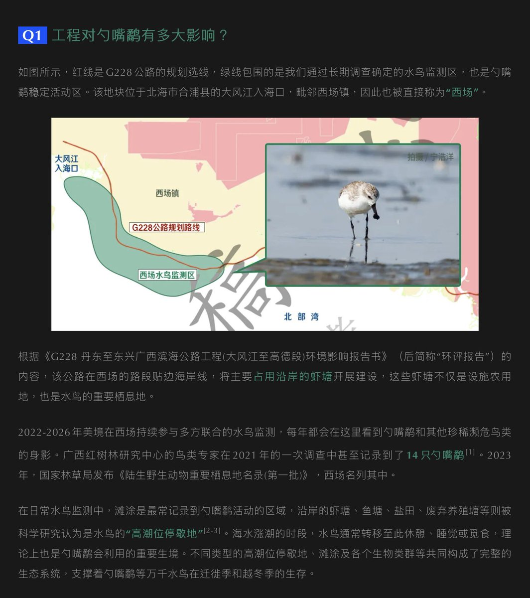
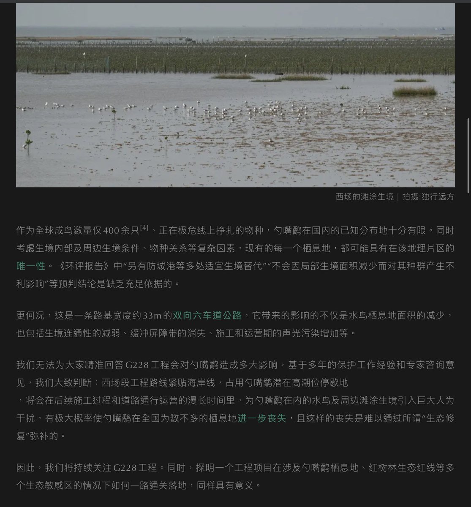
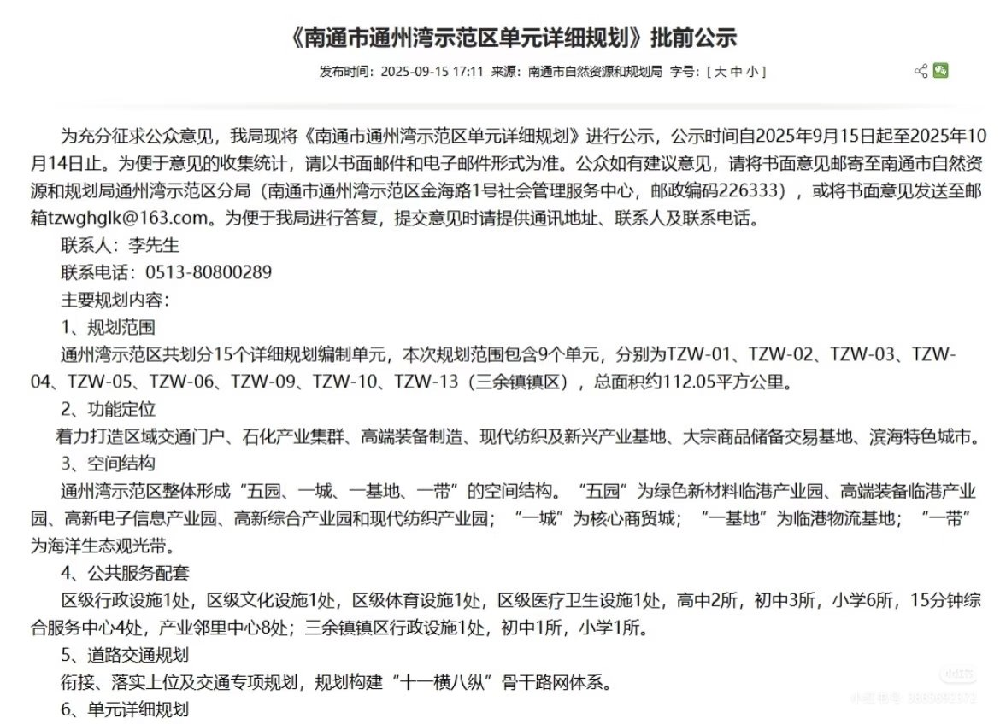
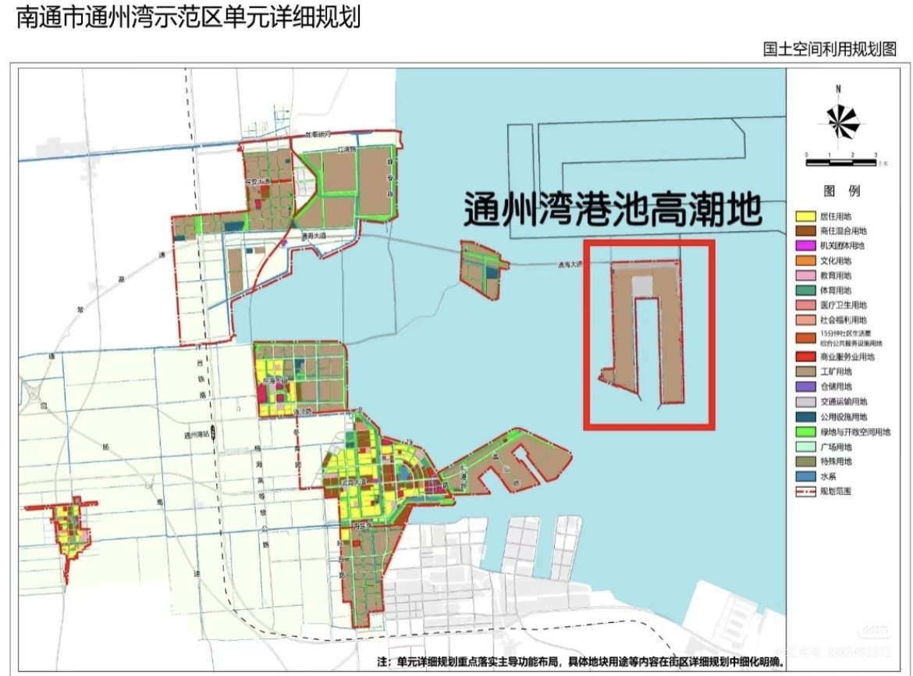
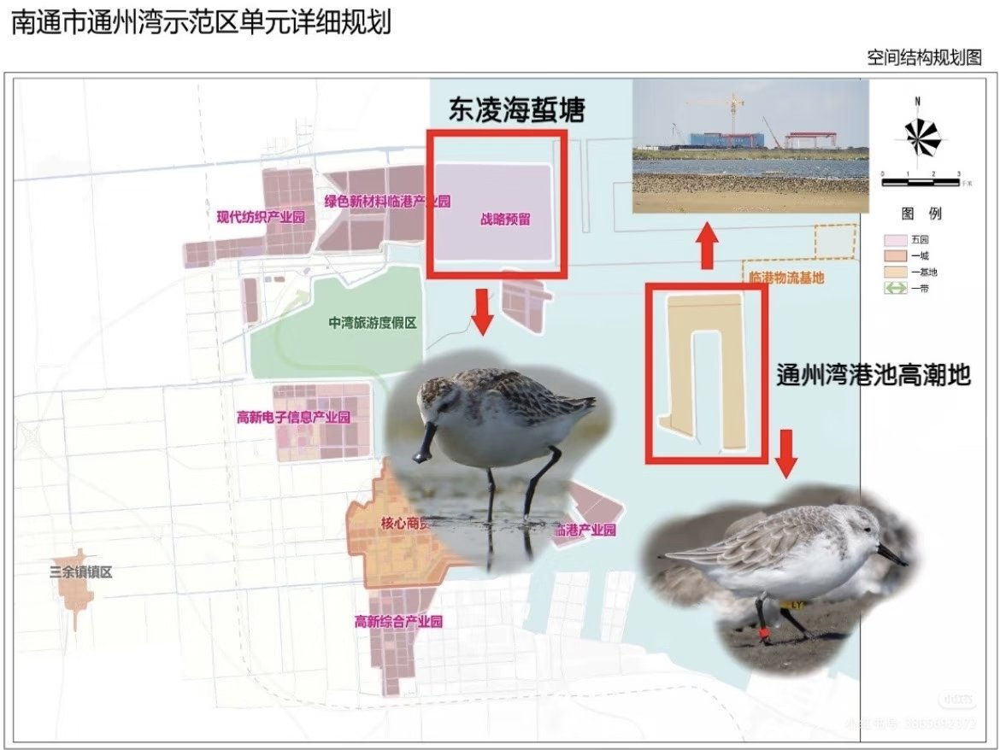
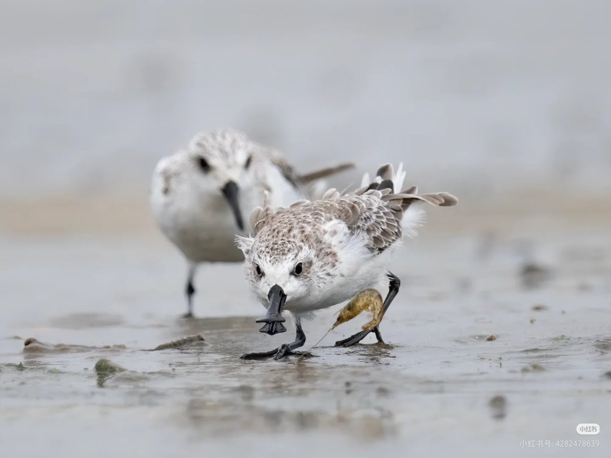

修你*的路呢😅，勺嘴鹬就剩400只了，还嫌灭绝的速度不够快是怎么的，这个公路是非修不可吗？上次通州湾开发的事那么多人举报硬是无动于衷是吧就非得可着这段鸻鹬高潮停歇地霍霍，有没有一种可能真正该灭绝的另有其人







（1/3）东亚-澳大利西亚候鸟迁飞路线上的又一片滩涂要被开发了。候鸟们尤其是鸻鹬们十分依赖这条路线上的滩涂作为迁徙补给站和停歇地，对滩涂的开发会对鸻鹬造成致命的打击。
//P1可见通州湾开发公示，p2-3详细规划图，p4萌萌小勺，图源见水印（是的，本鸟人还一次都没见过小勺子>.< https://t.co/fpNc1Q9OzY
//P1可见通州湾开发公示，p2-3详细规划图，p4萌萌小勺，图源见水印（是的，本鸟人还一次都没见过小勺子>.< https://t.co/fpNc1Q9OzY